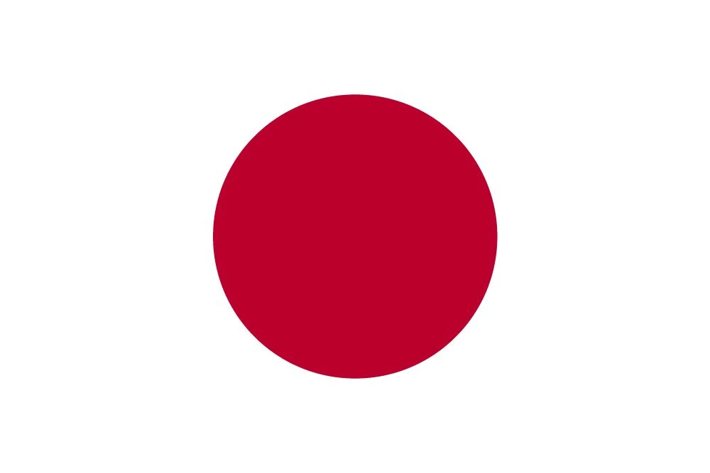

1. Kylian Mbappé’s Epic Final – The French Phenomenon Shines Bright
It’s December 18, 2022, and the stage at the Lusail Iconic Stadium in Qatar has never felt bigger. The world’s eyes are fixed on a showdown that promises to etch its place in World Cup history—Argentina versus France. The rivalry is electric. For Argentina, it’s Lionel Messi’s last dance, a final chance to claim the one trophy that has eluded him throughout his storied career. For France, it’s the chance to defend their title, to become the first team since Brazil in 1962 to win back-to-back World Cups. But while the spotlight shines brightest on Messi, another man is ready to stake his claim as football’s next great: Kylian Mbappé.
From the opening whistle, the drama unfolds quickly. Argentina looks strong, playing fluid, free-flowing football, with Lionel Messi at the heart of it all. By the 23rd minute, Messi had already netted a penalty and set up Ángel Di María for another goal, giving Argentina a 2-0 lead. At this point, it seemed as though the French team might be left for dead. But Mbappé, a player known for his electric pace and unwavering self-belief, had other plans.
In the 80th minute, with the match beginning to slip away, France was awarded a penalty. Mbappé, the embodiment of cool under pressure, stepped up to the spot. With laser focus, he sent Argentina’s goalkeeper Emiliano Martínez diving the wrong way, reducing Argentina’s lead to 2-1. The spark had been lit.
Just 97 seconds later, France delivered an avalanche of intensity. Mbappé controlled the ball with his left foot, fended off an Argentina defender, and unleashed a stunning volley with his right. The ball rocketed past Martínez and into the net, leaving the crowd in stunned silence. It was an extraordinary moment, a show of technical brilliance and composure at the highest level. Mbappé had pulled France back from the brink, and the game was now tied at 2-2.
The Lusail stadium had become a cauldron of tension, the roar of the crowd punctuating every touch of the ball. Argentina, however, would not go quietly into the night. In extra time, Messi delivered a moment of magic, converting a rebound to put Argentina ahead 3-2. But even this wasn’t enough to seal the deal. In the 118th minute, Mbappé was awarded another penalty, a chance to complete one of the most audacious comebacks in World Cup history. With unshakable confidence, he buried the penalty into the top corner, securing his third goal of the night and completing a hat-trick in a World Cup final—something no player had done since Geoff Hurst in 1966.
The match, now 3-3, was heading into a penalty shootout. Mbappé had delivered a historic performance, putting France back into the fight and showing the world that he was ready to take his place alongside Messi, Ronaldo, and the other legends of the game. Yet, in the end, Argentina would prevail in the shootout, lifting their third World Cup trophy. Messi had his moment of glory, securing his long-awaited triumph.
But Mbappé’s performance—his courage, his brilliance, and his determination—was something to behold. A hat-trick in a World Cup final, in a match for the ages, was not just a masterclass in individual brilliance; it was a statement. Mbappé had firmly announced that the torch had been passed. The future was his, and that future was now.

2. Argentina’s Magical Messi – The Golden Run
When Lionel Messi took the field in Qatar for the 2022 World Cup, it was clear that this was a man on a mission. The tournament had all the elements of a fairy tale: Messi, the maestro, the player with the most records in the game, the man who had conquered Europe with Barcelona, and now, finally, was on the verge of conquering the world.
The 2022 World Cup was Messi’s last chance to secure the one title that had evaded him his entire career—the World Cup. It was the missing piece in his legacy, the one thing that separated him from the likes of Pelé and Diego Maradona, the two other legends of the sport who had led their countries to World Cup glory.
From the very start of the tournament, Messi made his intentions known. In Argentina’s opening game against Saudi Arabia, things did not go as planned. A shocking 2-1 loss sent shockwaves through the football world, but Messi remained unshaken. Argentina came roaring back, with Messi at the center of it all. In each game, from the moments of brilliance against Mexico, to the stunning assist against Croatia, Messi orchestrated Argentina’s run like a conductor leading a symphony.
His leadership was on full display. It wasn’t just the goals—though there were plenty of those, from a stunning strike against Mexico to his incredible dribble past defenders in the semifinal against Croatia. It was Messi’s ability to pull the strings in every match, to be the heartbeat of the team, to make those around him better. His passes, his vision, his ability to create opportunities, made him not only Argentina’s captain but the engine that powered them through to the final.
The final against France was a spectacle in itself, an all-time classic that will be remembered for years to come. With Argentina leading 2-0, Messi was already having a defining impact, but when the French responded with Kylian Mbappé’s brace and sent the match into extra time, Messi showed why he is one of the best to ever play the game. He scored again, putting Argentina ahead 3-2, and gave everything for the cause.
Even as Mbappé completed his hat-trick and leveled the score once more, Messi’s influence was undiminished. When the penalty shootout arrived, Messi held his nerve, calmly stepping up to take his penalty and putting Argentina 1-0 up in the shootout. The weight of the world seemed to be on his shoulders, but Messi was unflinching.
When Argentina triumphed 4-2 in the shootout, securing their third World Cup title, Messi had finally achieved his destiny. The long-awaited triumph completed his journey, and with it, the story of a man who had carried Argentina’s hopes on his shoulders for years.
Messi’s World Cup victory in 2022 was the culmination of everything that made him the greatest player of his generation—his artistry, his vision, and above all, his leadership. He was not just the best player on the pitch; he was the man who had made Argentina believe that they could win it all.

3. Morocco’s Historic Run – Africa’s Pride
The 2022 World Cup in Qatar was not just a showcase for the football elite but also a stage for the underdogs. Few stories were as compelling as Morocco’s remarkable journey, a tale of defiance, resilience, and pride that captured the hearts of fans around the world. From the opening whistle of their campaign, it was clear that Morocco was ready to make history.
Morocco’s defense, led by captain Romain Saïss and the rock-solid goalkeeper Yassine Bounou, was a fortress. Their defensive resolve was the backbone of a tournament run that would defy the odds. In the group stage, Morocco stunned the football world with a 0-0 draw against Croatia and a 2-0 victory over Belgium. But it was their knockout round performances that would truly captivate fans.
In the Round of 16, Morocco faced the mighty Spain, who were coming off a dominant group stage performance. It was a tactical masterclass from coach Walid Regragui, who set his team up to absorb pressure and break on the counter. The match was a tactical chess match, and Morocco’s defense held firm through 120 minutes. When it came to penalties, Bounou became the hero. With two crucial saves, he propelled Morocco to a 3-0 penalty victory, sending Spain packing.
The quarterfinals were no easier, as Morocco faced Portugal. The Portuguese side, brimming with talent, was widely favored. But Morocco, led by their resolute defense and inspired by the spirit of their fans, held firm once again. In the 42nd minute, Youssef En-Nesyri’s towering header broke the deadlock, and Morocco held on for a historic 1-0 win. The nation erupted in celebration, and Morocco’s players were carried on a wave of national pride. They were the first African team ever to reach the World Cup semifinals.
Though their journey ended with a 2-0 loss to France in the semifinals, Morocco’s World Cup run will forever be remembered as a monumental achievement for African football. Their pride, grit, and determination showed the world that anything was possible, and they returned home as heroes.

4. Japan’s Last-Minute Miracle – A Thriller Against Spain
It was December 1, 2022, and the atmosphere inside the Al Bayt Stadium was electric. On one side of the pitch, Spain, a team renowned for their fast-paced, possession-heavy football, stood poised to assert their dominance in what promised to be a key match in Group E. On the other, Japan, the underdogs who had already stunned the footballing world with their shock win over Germany in the opening match of the group, were preparing to take on one of the tournament’s heavyweights.
Spain had been the talk of the tournament. With their youthful energy, dazzling midfield play, and ruthless attacking flair, they had dispatched their opponents with ease. Their 7-0 demolition of Costa Rica in their opening match was proof that they were among the favorites to go deep into the competition. Japan, however, was determined not to be intimidated. Their resilient, team-first mentality, coupled with a growing sense of belief, had already seen them defy expectations.
The stakes for both sides were monumental. With a win, Spain would secure a place in the knockout rounds, and Japan, fresh off their triumph against Germany, knew that a positive result would send them through to the next stage. The match was poised to be a true battle of wits, and as the teams took to the pitch, it was clear that a moment of magic would be required for either side to seize the day.
From the outset, Spain showed their dominance. The crisp passing, the relentless pressure, and the fluid movement of their attacking trio—led by the ever-dominant Ferran Torres—put Japan on the backfoot. But the Samurai Blue were not intimidated. They absorbed the pressure, sticking to their disciplined defensive shape and looking to hit on the counter-attack when the opportunity arose.
As the second half began, Spain seemed to take full control. In the 48th minute, they broke the deadlock through an expertly executed strike from Alvaro Morata, who latched onto a pass and slotted it past Japan’s goalkeeper, Shuichi Gonda. Spain’s fans roared, believing that their team was on course to take full control of the match and march on to the knockout stages.
But Japan, ever the resilient warriors, were not done yet. Just two minutes later, the Samurai Blue responded with a goal that would send shockwaves through the stadium. Ritsu Doan, who had been a standout performer in the group stage, picked up the ball outside the box. With composure and precision, he rifled a stunning strike that left Spanish goalkeeper Unai Simón frozen. The ball sailed into the bottom corner of the net, sending Japan’s supporters into raptures. A 1-1 scoreline in the 50th minute—Japan had equalized and were back in the hunt.
With both teams now level, the tension only increased. The clock was ticking, and each moment felt like it carried the weight of the world. Spain, desperate to regain the advantage, pushed forward with wave after wave of attacks. Japan, meanwhile, dug in their heels, relying on their tactical discipline and the brilliance of their defensive line to fend off Spain’s advances. It was a battle of wills, with Japan’s warriors holding firm against the Spanish onslaught.
And then, as the game entered its final stages, a moment of pure footballing magic unfolded—one that would live long in the memory of every fan watching. In the dying minutes of the game, Japan’s relentless pressing paid off. A cross into the box found Kaoru Mitoma, who flicked a header towards the goal. The ball seemed destined to roll out of play, but Mitoma’s header had just enough pace on it to keep it in. In a moment that felt like an eternity, the ball was delivered back into the box, and with perfect timing, Japan’s Ayase Ueda slotted it home.
Or so it seemed. The referee, unsure if the ball had gone out of play before Mitoma’s assist, consulted the VAR. The entire stadium held its breath, waiting for the decision. After what felt like an age, the call came. The goal stood. Japan had taken a 2-1 lead. The crowd erupted in ecstasy. The scenes were nothing short of miraculous—a last-minute turnaround, one that no one could have foreseen.
Japan’s victory over Spain was more than just a result—it was a statement. It was a testament to their never-say-die attitude, their belief that anything was possible, and their unyielding spirit in the face of adversity. With this victory, Japan had not only secured their place in the knockout rounds but had also solidified their position as one of the most exciting and unpredictable teams in the tournament.
The Al Bayt Stadium buzzed with energy as the final whistle blew, confirming Japan’s 2-1 win over Spain. As the Spanish players trudged off the field, their dreams of topping the group were dashed, and the world was left in awe of Japan’s stunning resilience. For the Samurai Blue, it was a moment that would go down in history—a moment that encapsulated the essence of football: anything can happen, and the game is never over until the final whistle.
This last-minute victory, one that was built on passion, belief, and pure footballing drama, will forever be remembered as one of the greatest moments of the 2022 World Cup. Japan had done the unthinkable once again, and in the process, they had created a piece of footballing history that would live on forever.
5. Saudi Arabia’s Shock Victory Over Argentina – The Early Upset
November 22, 2022, will be remembered as a day that sent shockwaves through the world of football. Saudi Arabia, ranked 51st in the world, found themselves up against Argentina, one of the tournament favorites, in their opening match of Group C. On paper, it was supposed to be a routine win for Argentina, led by their talisman, Lionel Messi, fresh off lifting the Copa América trophy and seemingly poised for a deep run in the World Cup.
The odds were stacked against Saudi Arabia, whose World Cup history had been largely uneventful compared to the footballing powerhouses of the world. Few gave them any chance of pulling off an upset against the South American giants. But in the cruel and beautiful nature of football, that’s precisely what happened.
The match began with Argentina asserting their dominance, as expected. Messi, who had already established himself as one of the greatest players to ever play the game, was determined to make his mark on this World Cup. In the 10th minute, Argentina were awarded a penalty, and Messi, with his trademark coolness, slotted the ball past Saudi Arabia’s goalkeeper, Mohammed Al-Owais. The Argentine fans erupted in celebration, and many believed that the floodgates would open.
But Saudi Arabia, unfazed and unbroken, were resolute in their defense. They fought for every ball, closed down spaces, and disrupted Argentina’s fluid attacking play. Then, just before the halftime whistle, the unthinkable happened. Saudi Arabia leveled the score with a moment of clinical precision. Saleh Al-Shehri, the forward who had been in the right place at the right time, pounced on a loose ball and slotted it home, leaving Argentina’s goalkeeper, Emiliano Martínez, with no chance. Saudi Arabia had done it—they had drawn level at 1-1, sending a wave of shock through the stadium.
The second half was even more surreal. Just minutes into the restart, Saudi Arabia struck again. This time, it was Salem Al-Dawsari who would etch his name into footballing folklore. Picking up the ball on the left wing, he weaved through a sea of Argentine defenders with incredible skill, before launching a rocket into the top corner of the net. The roar from the Saudi Arabian fans was deafening, and Argentina’s players were stunned. It was a goal of the highest quality, and it sent the entire footballing world into disbelief.
With a 2-1 lead, Saudi Arabia had turned the tables on Argentina. Messi and his teammates were shell-shocked, unable to break down the resolute Saudi defense. Argentina threw everything they had at Saudi Arabia, with wave after wave of attacks, but Al-Owais stood tall, pulling off save after save to preserve his team’s lead. The minutes ticked by, and as the final whistle blew, Saudi Arabia had pulled off one of the most astonishing upsets in World Cup history.
The victory was nothing short of miraculous. Saudi Arabia had toppled one of the tournament’s heavyweights and sent shockwaves through the footballing world. For Argentina, it was a bitter disappointment, a harsh reminder of how unpredictable football can be. For Saudi Arabia, however, it was a moment of pure triumph—a victory built on resilience, heart, and an unwavering belief that anything is possible.
As the final whistle blew and the Saudi players celebrated in front of their ecstatic fans, it was clear that this was not just an upset. It was a statement. A reminder that in the World Cup, anything can happen, and on that day, Saudi Arabia had proven that football’s magic is truly infinite.
6. Croatia’s Luka Modrić – The Heart and Soul of a Nation
Luka Modrić’s 2022 World Cup was nothing short of exceptional. The Croatian midfield maestro, already a Ballon d’Or winner, showcased the brilliance that made him one of the greatest players of his generation. Modrić’s vision, passing range, and ability to control the flow of the game were on full display in Qatar.
Throughout Croatia’s tournament, Modrić’s leadership was integral to their success. In the quarterfinals against Brazil, with Croatia on the ropes and Neymar scoring his legendary goal in extra time, it was Modrić’s composure and resilience that guided his side. Croatia would equalize and eventually win on penalties, with Modrić’s calm demeanor and playmaking ability anchoring the side’s stunning performance.
Though Croatia would fall short against Argentina in the semifinals, Modrić’s performances in the tournament reinforced his place as one of the all-time greats, showing once again that age is but a number when you possess such rare class and vision.

7. The United States' Historic Return – A New Dawn for American Football
The 2022 World Cup marked a new chapter for U.S. soccer. After missing the 2018 tournament, the United States men’s national team returned to the World Cup with a renewed sense of purpose. In Qatar, they were determined to show the world that they were ready to compete with the best.
Led by Christian Pulisic, who had already cemented himself as one of the nation’s brightest stars, the U.S. defied expectations in their group. Their 1-0 win over Iran in the final match to secure progression to the knockout rounds was a defining moment in American soccer history. Pulisic’s goal—scored with a level of grit and determination—will be remembered as the moment the U.S. truly arrived as a soccer nation on the world stage.
While they were eventually knocked out by the Netherlands, the U.S.’s performance in Qatar marked a turning point. With a young, dynamic team and a nation growing in football fervor, the 2022 World Cup showed that the future of American soccer is bright.

8. Croatia’s Resilience – The Heart of the Balkan Underdog
Croatia’s 2022 World Cup journey was a testament to their unyielding spirit, their tactical discipline, and their refusal to back down in the face of adversity. For a country with a population of just over four million, they had once again proven that they could compete with the best in the world. Their run in Qatar was a mix of hard-fought victories and dogged determination, proving that class and heart can be a potent combination.
Croatia’s campaign in Qatar had all the makings of a fairytale. After their remarkable second-place finish in 2018, expectations were high for the Golden Generation, but many wondered whether the likes of Luka Modrić, Ivan Perišić, and Marcelo Brozović could replicate that magic four years later. The team’s resilience in the face of tough competition was evident right from the start.
Their group stage was a mixture of style and substance, with a 0-0 draw against Morocco, a hard-fought 1-0 victory over Canada, and a 0-0 draw with Belgium. Croatia’s ability to grind out results, even when not at their best, was an early sign that they were more than just a team full of talented players. Their defense was solid, and their midfield was orchestrated by the peerless Modrić, who, despite his age, still had the legs and the vision to pull the strings for his team.
When Croatia entered the knockout stages, they faced Japan in the Round of 16. Japan, having already stunned Spain and Germany, were not to be underestimated. Croatia and Japan fought valiantly, but it wasn’t until the penalty shootout that the Croatian magic truly emerged. Dominik Livaković, Croatia’s goalkeeper, became the hero, saving three penalties and sending Croatia through to the quarterfinals.
In the quarterfinals, Croatia faced Brazil, one of the tournament favorites. The match was an epic battle, and it seemed as though Brazil would take control after Neymar’s stunning goal in extra time. But once again, Croatia proved their resilience. Bruno Petković’s equalizer in the 117th minute sent the match to penalties, where Livaković again stood tall. Croatia won the shootout 4-2, stunning Brazil and sending the footballing world into shock.
The semifinal against Argentina was a bridge too far for Croatia, as they fell 3-0 to Lionel Messi’s inspired side. However, their legacy had already been secured. Croatia’s ability to withstand pressure, to show incredible mental fortitude, and to keep their dreams alive when it seemed like all hope was lost made them a team to be admired. Their determination, heart, and steel had defined their campaign. They were a force to be reckoned with, and they left Qatar with pride, finishing third with a win over Morocco. Croatia’s journey, built on grit and resilience, would forever be remembered as one of the most inspiring stories of the 2022 World Cup.
9. Brazil’s Early Exit – The Shock That Shook the World
Brazil’s 2022 World Cup campaign began with all the promise of a nation that was brimming with talent, flair, and ambition. Under Tite’s guidance, the Seleção were considered one of the tournament’s favorites, boasting a squad filled with world-class players. From Neymar to Vinícius Júnior, Casemiro to Alisson, Brazil’s roster was packed with stars, each capable of providing moments of magic.
The group stage saw Brazil assert their dominance. A 2-0 victory over Serbia, followed by a thrilling 1-0 win over Switzerland, and a comprehensive 4-1 triumph over Cameroon saw them top their group with ease. The footballing world was buzzing, anticipating yet another beautiful Brazil run toward World Cup glory. Their attacking brilliance, led by Neymar, was a joy to watch, and the fluidity of their play made them look like an unstoppable force.
However, football is a cruel game, and no one could have predicted what would unfold in the quarterfinals. Brazil faced Croatia, a team known for their tenacity and resilience. It was a game that had it all: drama, tension, and heart-stopping moments. In extra time, Brazil seemed poised to seal the victory when Neymar, with all the elegance and skill that has become his trademark, scored a stunning goal to give Brazil a 1-0 lead in the 106th minute. The entire nation of Brazil breathed a collective sigh of relief.
But Croatia, as they had done so many times before, refused to bow out. With a late strike from Bruno Petković in the 117th minute, Croatia leveled the score at 1-1, sending the match into a penalty shootout. The shootout was a tense affair, and despite Brazil’s rich footballing history, they faltered. Croatia’s goalkeeper, Dominik Livaković, emerged as the hero, saving two penalties, while Brazil missed three. It was an agonizing defeat for Brazil, who had entered the tournament as the favorites but left the World Cup in heartbreak.
The shock of Brazil’s exit sent shockwaves through the footballing world. How could such a talented team have fallen short? The loss was a bitter pill for Neymar, who had given so much to the team and was visibly devastated. The nation that had dreamed of a sixth World Cup title was left in mourning. Despite the heartache, the 2022 World Cup would still be remembered as a tournament that featured moments of breathtaking brilliance from Brazil, but also a sobering reminder that even the most talented teams can falter when the stakes are highest.

10. England’s Heroic Heartbreak – The Penalty Pain
In the footballing heartlands of England, the 2022 World Cup was seen as a genuine opportunity for redemption. After years of heartbreak, following their near-miss in 2018, hopes were high that Gareth Southgate’s England could build on their semifinal appearance in Russia and finally break their 56-year wait for a major tournament title. The squad was packed with talent: Harry Kane, Phil Foden, Bukayo Saka, and Jude Bellingham were just some of the bright stars poised to carry the weight of the nation’s expectations.
England’s group-stage performances were impressive. A 6-2 demolition of Iran was followed by a 3-0 victory over Senegal, and although they drew 0-0 with the United States, they finished top of the group with ease. The Three Lions were moving with confidence, their attacking play fluid and energetic, and their defense, anchored by Harry Maguire and John Stones, resolute.
In the quarterfinals, England found themselves face-to-face with France, the defending champions, in what was destined to be a classic encounter. The match had everything. A first-half penalty from Kane gave England the lead, but France equalized shortly after with a brilliant strike from the ever-dangerous Kylian Mbappé. In the second half, France took the lead with an outstanding header from Olivier Giroud. England, undeterred, mounted a comeback and were awarded a penalty in the dying moments of the match. Harry Kane, England’s captain and all-time top scorer, had the chance to tie the game and send it to extra time.
The moment felt monumental. Kane had already scored one penalty, and this second chance could have been the moment that defined England’s World Cup dream. With the hopes of an entire nation resting on his shoulders, Kane stepped up to the spot. But this time, unlike his earlier penalty, the ball sailed over the crossbar. The heartbreak was palpable. England’s hopes were dashed, and France advanced to the semifinals with a 2-1 victory.
For England, the pain of that penalty miss would linger. Kane, though heartbroken, was resolute in his belief that he could still be proud of his team’s journey. The pain was shared by the nation, who had dreamed once again of World Cup glory only to be left in the same place as so many times before: heartbreak. England’s journey in Qatar may have ended in anguish, but the character, resilience, and skill shown throughout the tournament gave fans hope for the future. This painful exit would, in time, be remembered as a story of near-misses—a story that England would carry into the next World Cup with the hope that one day, the stars would align.